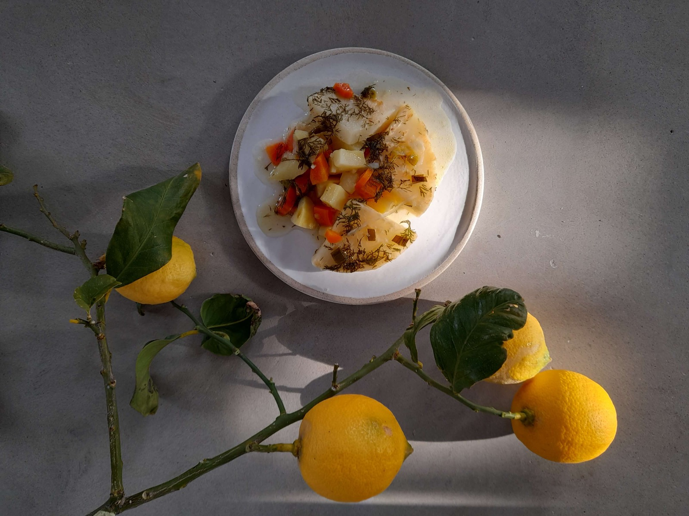
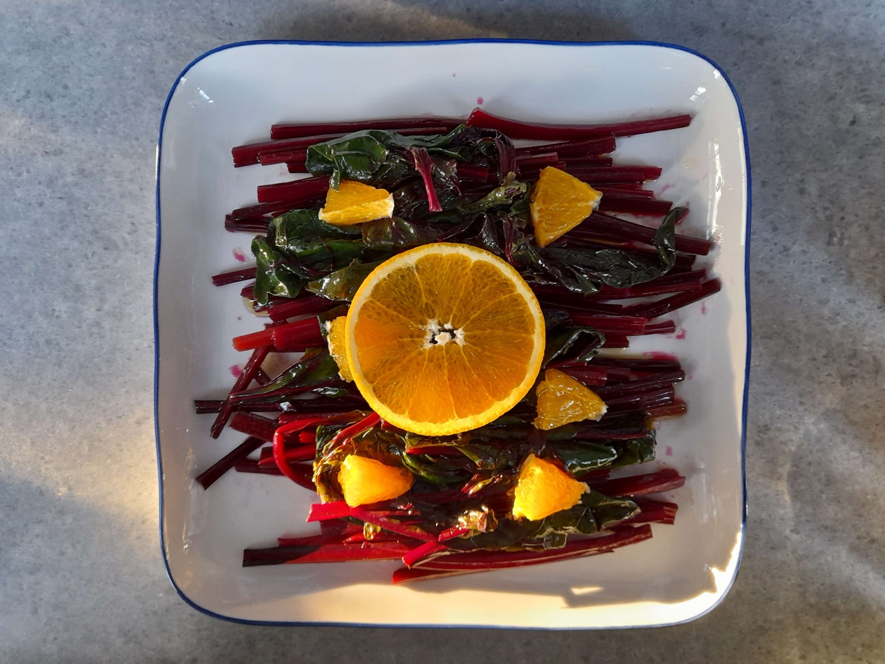
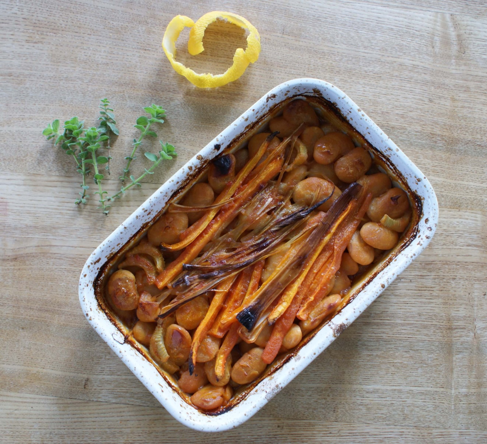
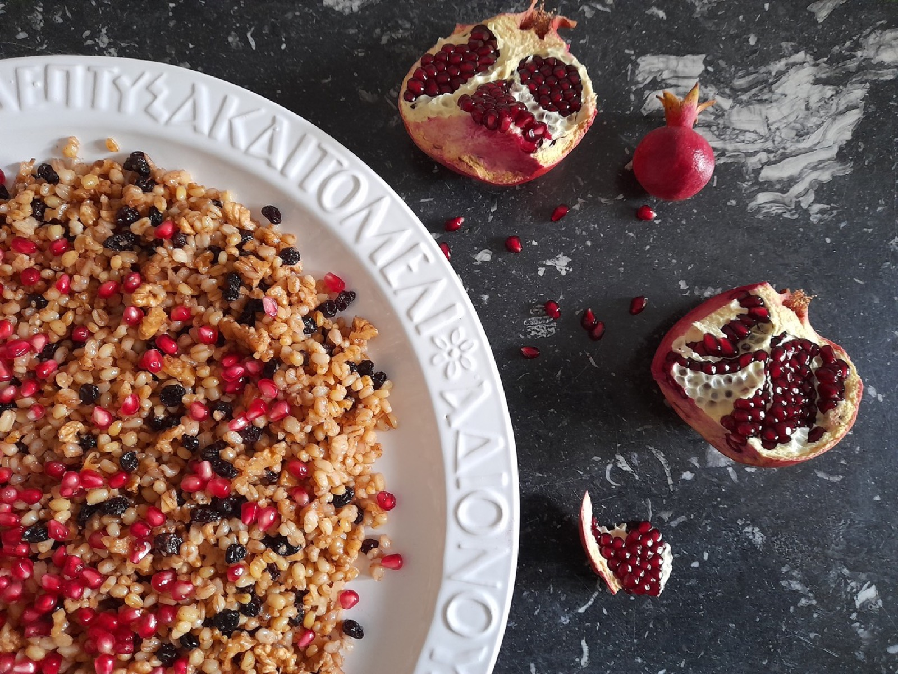

ιστορίες για το φαγητό και τις καλύτερες πάρτι στη ζωή μου
ιστορίες για το φαγητό και τις καλύτερες πάρτι στη ζωή μου

Ένα μείγμα, δέκα συνταγές!Υπάρχει ένα μαγικό μείγμα με το οποίο μπορεί κανείς να κάνει τουλάχιστον δέκα γλυκά. Λάβα κέικ, υπερσοκολατένιο κέικ, μπράου

Πατάτες στη λαδόκολλαΣυνήθως διαφωνώ με κάθε συνταγή που περιέχει το «σαν». Σαν σαντιγύ, σαν σοκολάτα, σαν μπεσαμέλ κτλ. Αυτό το δόγμα, τελικά δεν ισχ

Xειμωνιάτικο φαγητό, με τρία είδη βολβών, σελινόριζα-πατάτες-καρότα. Αν και οι γεύσεις είναι βαθιά γήινες, μπορεί το φαγητό να γίνει αέρινο και φίνο.

Βραστή σαλάτα με πορτοκάλιΕίναι χάρμα οφθαλμών. Τόσο οι μίσχοι όσο και τα φύλλα του παντζαριού έχουν πρώτα απ’ όλα εικαστικό ενδιαφέρον. Το σπάνιο σχή

Τυρόπιτα με φίλο κρούστας Καθ΄όλη τη διάρκεια των παιδικών μου χρόνων δεν ευτύχισα να φάω κάτι από τα χέρια του πατέρα μου. Αγνοούσα παντελώς ότι ήξερ

Είναι φαγητό που θέλει παρέα. Δύσκολα το κάνεις για δύο άτομα. Η μισή του επιτυχία είναι η ποιότητα του φασολιού. Αν το φασόλι είναι καλό, τότε το φαγ

Στριφτή κολοκυθόπιταΚάθε φθινόπωρο εμφανίζονται στην κουζίνα μου πολυάριθμες κολοκύθες. Λίγες από τον κήπο μας και αρκετές, πεσκέσια από φίλους και γν

Η 1η Νοεμβρίου έχει οριστεί ως Παγκόσμια Ημέρα Ξινόμαυρου (International Xinomavro Day). Η ένωση οινοποιών «Οίνοι Βορείου Ελλάδος» αποφάσισε να προχωρ

Το μυστικό για ωραία κόλλυβα βρίσκεται στους άφθονους και φρέσκους ξηρούς καρπούς. Προσθέτω και πολλές μαύρες μικρές σταφίδες και ελαχιστοποιώ τη ζάχα
Νέες συνταγές και ιστορίες, κατευθείαν στο inbox σου.